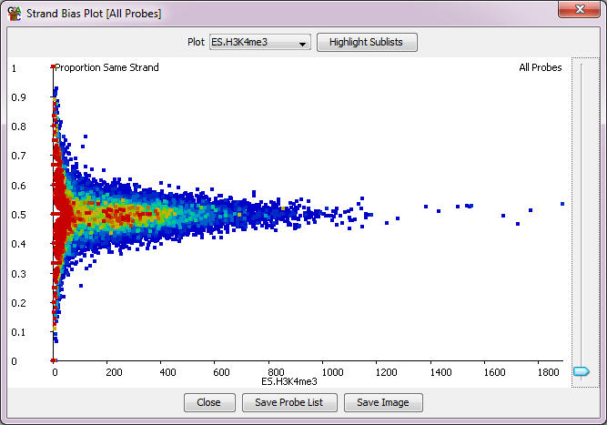

The strand bias plot allows you to look at the directionality of the reads underneath a set of probes. It produces a 2D plot showing the proportion of reads on the reference strand on the y-axis against the number of reads on the x-axis

The reference strand is the forward strand, unless your probes have a direction associated with them, in which case it will be the direction of the probe.